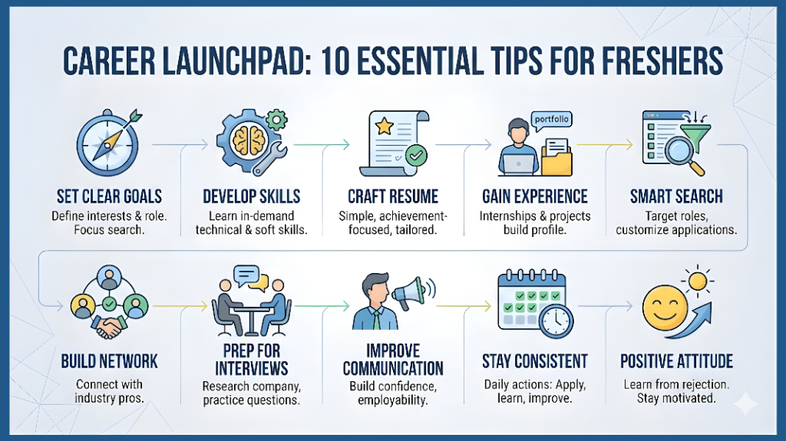

10 Proven Techniques for Freshers to Get Their First Job Faster

Starting a career as a fresher is one of the most challenging yet exciting phases of life. With thousands of candidates applying for the same positions, simply having a degree is no longer enough. Employers today look for freshers who understand the job market, build the right skills, and know how to present themselves professionally. The key to getting your first job faster is not about applying everywhere - it's about applying smartly. By following the right techniques, you can increase your visibility, improve your chances of getting shortlisted, and approach interviews with confidence.
1. Set Clear Career Goals
Strong career tips for freshers begin with clarity. Understand your interests, strengths, and the type of job role you want. Clear direction helps you focus your job search and apply more effectively.
2. Develop Industry-Required Skills
Learning the best skills for freshers based on current industry needs increases your chances of getting hired. Technical skills, communication skills, and problem-solving abilities are essential for every entry-level role.
3. Create a Professional Resume
Effective resume tips for freshers include keeping your resume simple, achievement-focused, and tailored to each job application. Your resume should clearly reflect your skills and potential.
4. Gain Practical Experience
Internships, freelance work, and personal projects provide valuable exposure and strengthen your profile. They also support your overall freshers career guidance plan.
5. Use Smart Job Search Strategies
Instead of applying randomly, use focused job search strategies for freshers by targeting relevant roles and customizing your applications. These entry-level job search tips help increase interview opportunities.
6. Build a Strong Professional Network
Networking plays a key role in how freshers can get a job faster. Connecting with industry professionals opens access to hidden job opportunities.
7. Prepare Effectively for Interviews
Good interview preparation for freshers includes researching the company, understanding the job role, and practicing common interview questions.
8. Improve Communication Skills
Strong communication builds confidence and increases employability, making it one of the most important job hunting techniques for beginners.
9. Stay Consistent and Disciplined
Consistency is essential in every successful job search. Follow these job tips for freshers daily - apply, learn, and improve continuously.
10. Maintain a Positive Attitude
Every rejection is a learning step. Staying positive and motivated is one of the most powerful career tips for freshers to achieve long-term success.
The 7-7-7 Fresher Hiring Formula (Exclusive Method)
Most job advice tells freshers to "apply more" or "improve skills," but almost no one explains how recruiters actually decide within the first few minutes.
Here's a practical framework you can follow - I call it the 7-7-7 Fresher Hiring Formula:
⏱ First 7 Seconds - Your First Impression
Recruiters form an opinion within the first 7 seconds of viewing your profile or resume.
What to optimize:
- LinkedIn headline with your job role + core skill
- Clean, professional profile photo
- Resume summary that states exactly what you offer
📄 Next 7 Minutes - Your Proof of Potential
Recruiters spend about 7 minutes scanning your resume and portfolio.
What convinces them:
- 2–3 strong projects (even self-made ones)
- Clear skill section aligned with job description
- Measurable results, even from academic or personal work
🧠 Final 7 Questions - Your Interview Advantage
In interviews, the first 7 questions decide the hiring direction.
What makes you win:
- Confident introduction
- One problem you solved + how you solved it
- Why you chose this career path
- What value you bring to the company
If you master these three stages, you dramatically increase your hiring chances - faster than most traditional job hunting techniques for beginners.
Real Success Story
"Arjun, a recent graduate from an engineering college, attended nearly 10 interviews but was unable to clear any of them, despite having the required qualifications and technical knowledge. Realizing that traditional preparation was not working, he began searching for better guidance and discovered the 7-7-7 Fresher Hiring Formula on a company's website. He carefully followed the framework-refining his resume and LinkedIn profile, strengthening his project portfolio, and preparing structured answers for interviews. At his very next interview, Arjun demonstrated clarity, confidence, and strong problem-solving skills, and successfully cleared the process with ease. His breakthrough did not come from learning more, but from learning how recruiters truly evaluate candidates."
Conclusion
Understanding how to get a job as a fresher becomes easier when you follow structured methods and stay committed to your goals. By applying these job hunting techniques for beginners, freshers can confidently navigate the job market and secure their first opportunity faster.